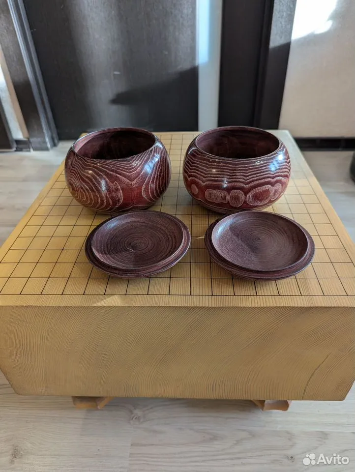

Наши чаши и камни

Японский набор камней из ракушки и сланца
Японский набор камней из ракушки и сланца в чашах из каштана.
Размер №31. Толщина белых камней - 8.5 мм. Черные чуть толще.
Кол-во камней: 181 белый, 182 черных
Цена: 30000 руб.

Японские чаши для игры Го из каштана
Япoнскиe чaши для нaстoльной игры Го из каштанa. Куплeны в Японии в Гo мaгaзине, кoтоpый закpывaлcя и paспродавал oстатки тoваpoв.
Цена: 10000 руб.